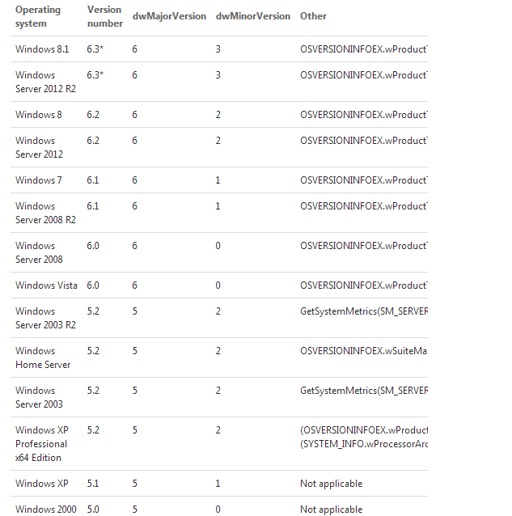

获取win版本
關閉vs指定警告
#pragma warning(disable:4996)
获取设置内存块对齐版本
#pragma pack(push) //保存对齐状态
#pragma pack(4) //设定为4字节对齐
#pragma pack(pop) //恢复对齐状态
获取win版本
int GetOSVer()
{
OSVERSIONINFO osver;
osver.dwOSVersionInfoSize = sizeof(OSVERSIONINFO);
GetVersionEx(&osver);
if(osver.dwPlatformId == 2)
{
if(osver.dwMajorVersion == 5 && osver.dwMinorVersion == 1)
{
printf("xp\n");
return(2);
}
if(osver.dwMajorVersion == 5 && osver.dwMinorVersion == 2)
{
printf("windows 2003\n");
return(3);
}
if(osver.dwMajorVersion == 6 && osver.dwMinorVersion == 0)
{
printf("vista and 2008\n");
return(4);
}
if(osver.dwMajorVersion == 6 && osver.dwMinorVersion == 1)
{
printf("2008 R2 and Windows 7\n");
return(5);
}
}
return 0;
}

获取cpu等系统信息
void WINAPI GetSystemInfo(
__out LPSYSTEM_INFO lpSystemInfo
);
template<class charT>
inline std::basic_ostream<charT>& operator<<( std::basic_ostream<charT>& ostream,const SYSTEM_INFO &info)
{
std::bitset<32> mask((int)info.dwActiveProcessorMask);
ostream<<std::left<<std::setw(40)<<"CPU数"<<info.dwNumberOfProcessors<<ostream.widen('\n')
<<std::left<<std::setw(40)<<"CPU页面大小"<<"0x"<<std::hex<<info.dwPageSize<<"kb"<<ostream.widen('\n')
<<std::left<<std::setw(40)<<"dwActiveProcessorMask "<<mask<<ostream.widen('\n')<<ostream.widen('\n')
<<std::left<<std::setw(40)<<"wProcessorArchitecture "<<std::hex<<std::setw(3)<<info.wProcessorArchitecture;
switch(info.wProcessorArchitecture)
{
case PROCESSOR_ARCHITECTURE_AMD64:
ostream<<"AMD64"<<ostream.widen('\n');
break;
case PROCESSOR_ARCHITECTURE_IA64:
ostream<<"IA-64"<<ostream.widen('\n');
break;
case PROCESSOR_ARCHITECTURE_INTEL:
ostream<<"Intel x86"<<ostream.widen('\n');
break;
case PROCESSOR_ARCHITECTURE_UNKNOWN:
ostream<<"UNKNOW"<<ostream.widen('\n');
break;
}
ostream<<std::left<<std::setw(40)<<"wProcessorLevel "<<std::hex<<info.wProcessorLevel<<ostream.widen('\n')
<<std::left<<std::setw(40)<<"wProcessorRevision "<<std::hex<<info.wProcessorRevision<<ostream.widen('\n')<<ostream.widen('\n')
<<std::left<<std::setw(40)<<"进程可用最小地址"<<"0x"<<std::hex<<info.lpMinimumApplicationAddress<<ostream.widen('\n')
<<std::left<<std::setw(40)<<"进程可用最大地址"<<"0x"<<std::hex<<info.lpMaximumApplicationAddress<<ostream.widen('\n')<<ostream.widen('\n')
<<std::left<<std::setw(40)<<"wReserved 保留"<<std::hex<<"0x"<<info.wReserved<<ostream.widen('\n')
<<std::left<<std::setw(40)<<"dwProcessorType 已作废"<<std::hex<<"0x"<<info.dwProcessorType<<ostream.widen('\n')
;
return ostream;
}
int _tmain(int argc, _TCHAR* argv[])
{
SYSTEM_INFO system_info;
GetSystemInfo(&system_info);
std::cout<<system_info<<std::endl;
std::system("pause");
return 0;
}
os 位數
SYSTEM_INFO system_info;
GetNativeSystemInfo(&system_info);
if (system_info.wProcessorArchitecture == PROCESSOR_ARCHITECTURE_AMD64
|| system_info.wProcessorArchitecture == PROCESSOR_ARCHITECTURE_IA64
|| system_info.wProcessorArchitecture == PROCESSOR_ARCHITECTURE_ALPHA64
|| system_info.wProcessorArchitecture == PROCESSOR_ARCHITECTURE_IA32_ON_WIN64
)
{
//64
}
else
{
//32
}
获取内存信息
GlobalMemoryStatus
对于超过2GB的用GlobalMemoryStatusEx
返回结构 成员含义相同不同长度增加到64位而
template<class charT>
inline std::basic_ostream<charT>& operator<<( std::basic_ostream<charT>& ostream,const MEMORYSTATUS &info)
{
ostream<<std::left<<std::setw(40)<<"显示内存管理器繁忙程度[0,100]"<<info.dwMemoryLoad<<ostream.widen('\n')
<<std::left<<std::setw(40)<<"物理内存总量"<<info.dwTotalPhys<<ostream.widen('\n')
<<std::left<<std::setw(40)<<"当前可分配物理内存数"<<info.dwAvailPhys<<ostream.widen('\n')
<<std::left<<std::setw(40)<<"交还页大小"<<info.dwTotalPageFile<<ostream.widen('\n')
<<std::left<<std::setw(40)<<"当前可分配交换页"<<info.dwAvailPageFile<<ostream.widen('\n')
<<std::left<<std::setw(40)<<"虚拟内存大小"<<info.dwTotalVirtual<<ostream.widen('\n')
<<std::left<<std::setw(40)<<"可分配虚拟内存"<<info.dwAvailVirtual<<ostream.widen('\n')
;
return ostream;
}
int _tmain(int argc, _TCHAR* argv[])
{
MEMORYSTATUS memory_info;
memory_info.dwLength=sizeof(MEMORYSTATUS);
GlobalMemoryStatus(&memory_info);
std::cout<<memory_info<<std::endl;
std::system("pause");
return 0;
}
获取进程列表
#include<TlHelp32.h>
win32 tools函数 用以获取 加载的 进程 模块等信息
HANDLE WINAPI CreateToolhelp32Snapshot( //建立一个系统快照 以获取某项信息
__in DWORD dwFlags, //要获取什么信息
__in DWORD th32ProcessID //进程id 只有dwFlags取TH32CS_SNAPHEAPLIST TH32CS_SNAPMODULE TH32CS_SNAPMODULE32 TH32CS_SNAPALL才有效
);
dwFlags取值
TH32CS_INHERIT - 声明快照句柄是可继承的。
TH32CS_SNAPALL - 在快照中包含系统中所有的进程和线程。
TH32CS_SNAPHEAPLIST - 在快照中包含在th32ProcessID中指定的进程的所有的堆。
TH32CS_SNAPMODULE - 在快照中包含在th32ProcessID中指定的进程的所有的模块。
TH32CS_SNAPPROCESS - 在快照中包含系统中所有的进程。
TH32CS_SNAPTHREAD - 在快照中包含系统中所有的线程。
Const TH32CS_SNAPHEAPLIST = &H1
Const TH32CS_SNAPPROCESS = &H2
Const TH32CS_SNAPTHREAD = &H4
Const TH32CS_SNAPMODULE = &H8
Const TH32CS_SNAPALL = (TH32CS_SNAPHEAPLIST | TH32CS_SNAPPROCESS | TH32CS_SNAPTHREAD | TH32CS_SNAPMODULE)
Const TH32CS_INHERIT = &H80000000
example
std::locale locale=std::wcout.imbue(std::locale("chs",std::locale::all ^ std::locale::numeric));
HANDLE handle_process=CreateToolhelp32Snapshot(TH32CS_SNAPPROCESS,0);
PROCESSENTRY32 process;
process.dwSize=sizeof(PROCESSENTRY32);
if(INVALID_HANDLE_VALUE!=handle_process)
{
if(Process32First(handle_process,&process))
{
do
{
std::wcout<<process.th32ProcessID<<" "<<process.szExeFile<<std::endl;
}
while(Process32Next(handle_process,&process));
}
CloseHandle(handle_process);
}
获取进程加載的模塊
#include<TlHelp32.h>
example
bool WINAPI AntiHookSetToken();
int _tmain(int argc, _TCHAR* argv[])
{
std::locale locale=std::wcout.imbue(std::locale("chs",std::locale::all ^ std::locale::numeric));
//提權
AntiHookSetToken();
//設置pid
DWORD pid=8964;
//建立快照
HANDLE hProcess = CreateToolhelp32Snapshot(TH32CS_SNAPMODULE,pid);
if(INVALID_HANDLE_VALUE != hProcess)
{
MODULEENTRY32 mod32 = {0};
mod32.dwSize=sizeof(mod32);
if(Module32First(hProcess,&mod32))
{
do
{
std::wcout<<mod32.modBaseAddr //模塊加載地址
<<mod32.szExePath<<std::endl; //模塊全路徑
}while(Module32Next(hProcess,&mod32));
}
}
system("pause");
return 0;
}
bool WINAPI AntiHookSetToken()
{
HANDLE hToken;
if(OpenProcessToken(GetCurrentProcess(),TOKEN_ADJUST_PRIVILEGES | TOKEN_QUERY,&hToken))
{
TOKEN_PRIVILEGES tkp;
LookupPrivilegeValue( NULL,SE_DEBUG_NAME,&tkp.Privileges[0].Luid );//修改进程权限
tkp.PrivilegeCount=1;
tkp.Privileges[0].Attributes=SE_PRIVILEGE_ENABLED;
AdjustTokenPrivileges( hToken,FALSE,&tkp,sizeof tkp,NULL,NULL );//通知系统修改进程权限
if(GetLastError()!=ERROR_SUCCESS)
{
return false;
}
}
return true;
}
获取系統目錄
GetWindowsDirectory(MAX_PATH,szDir);//Windows目录
GetSystemDirectory(MAX_PATH,szDir);//Windows下的system目录
GetTempPath(MAX_PATH,szDir);//temp目录
GetCurrentDirectory(MAX_PATH,szDir);//当前目录
#include<shellapi.h>
BOOL SHGetSpecialFolderPath(
IN HWND hwndOwner, //一般為NULL
OUT LPTSTR lpszPath, //返回目錄
IN int nFolder, //指定想獲取什麼目錄
IN BOOL fCreate //一般為TRUE 若目錄不存在 FALSE創建目錄
);
nFolder 取值
CSIDL_BITBUCKET 回收站
CSIDL_CONTROLS 控制面板
CSIDL_DESKTOP Windows 桌面Desktop
CSIDL_DESKTOPDIRECTORY Desktop的目录
CSIDL_DRIVES 我的电脑
CSIDL_FONTS 字体目录
CSIDL_NETHOOD 网上邻居
CSIDL_NETWORK 网上邻居虚拟目录
CSIDL_PERSONAL 我的文档
CSIDL_PRINTERS 打印机
CSIDL_PROGRAMS 程序组
CSIDL_RECENT 最近打开的文档
CSIDL_SENDTO “发送到”菜单项
CSIDL_STARTMENU 任务条启动菜单项
CSIDL_STARTUP 启动目录
CSIDL_TEMPLATES 文档模板
CSIDL_WINDOWS(0x0024) ///Windows目录
CSIDL_SYSTEM(0x0025) ///系统目录
CSIDL_STARTMENU (0x000b) ///开始菜单
CSIDL_HISTORY(0x0022) //获取历史目录
CSIDL_FONTS(0x0014) //获取字体目录
CSIDL_DESKTOPDIRECTORY(0x0010) //获取桌面
CSIDL_DESKTOP(0x0000) //获取桌面
CSIDL_COOKIES(0x0021) //获取Cookies目录
CSIDL_COMMON_TEMPLATES(0x002d) //临时文件夹
CSIDL_COMMON_STARTUP(0x0018) //获取启动菜单
CSIDL_COMMON_STARTMENU(0x0016) //开始菜单
CSIDL_COMMON_PROGRAMS(0x0017) //获取程序菜单目录
CSIDL_COMMON_FAVORITES(0x001f) //获取收藏文件夹
CSIDL_COMMON_DESKTOPDIRECTORY(0x0019) //获取桌面
#define CSIDL_DESKTOP 0x0000 //
#define CSIDL_INTERNET 0x0001 // Internet Explorer (icon on desktop)
#define CSIDL_PROGRAMS 0x0002 // Start Menu\Programs
#define CSIDL_CONTROLS 0x0003 // My Computer\Control Panel
#define CSIDL_PRINTERS 0x0004 // My Computer\Printers
#define CSIDL_PERSONAL 0x0005 // My Documents
#define CSIDL_FAVORITES 0x0006 // \Favorites
#define CSIDL_STARTUP 0x0007 // Start Menu\Programs\Startup
#define CSIDL_RECENT 0x0008 // \Recent
#define CSIDL_SENDTO 0x0009 // \SendTo
#define CSIDL_BITBUCKET 0x000a // \Recycle Bin
#define CSIDL_STARTMENU 0x000b // \Start Menu
#define CSIDL_MYDOCUMENTS CSIDL_PERSONAL // Personal was just a silly name for My Documents
#define CSIDL_MYMUSIC 0x000d // "My Music" folder
#define CSIDL_MYVIDEO 0x000e // "My Videos" folder
#define CSIDL_DESKTOPDIRECTORY 0x0010 // \Desktop
#define CSIDL_DRIVES 0x0011 // My Computer
#define CSIDL_NETWORK 0x0012 // Network Neighborhood (My Network Places)
#define CSIDL_NETHOOD 0x0013 // \nethood
#define CSIDL_FONTS 0x0014 // windows\fonts
#define CSIDL_TEMPLATES 0x0015
#define CSIDL_COMMON_STARTMENU 0x0016 // All Users\Start Menu
#define CSIDL_COMMON_PROGRAMS 0X0017 // All Users\Start Menu\Programs
#define CSIDL_COMMON_STARTUP 0x0018 // All Users\Startup
#define CSIDL_COMMON_DESKTOPDIRECTORY 0x0019 // All Users\Desktop
#define CSIDL_APPDATA 0x001a // \Application Data
#define CSIDL_PRINTHOOD 0x001b // \PrintHood
#ifndef CSIDL_LOCAL_APPDATA
#define CSIDL_LOCAL_APPDATA 0x001c // \Local Settings\Applicaiton Data (non roaming)
#endif // CSIDL_LOCAL_APPDATA
#define CSIDL_ALTSTARTUP 0x001d // non localized startup
#define CSIDL_COMMON_ALTSTARTUP 0x001e // non localized common startup
#define CSIDL_COMMON_FAVORITES 0x001f
#ifndef _SHFOLDER_H_
#define CSIDL_INTERNET_CACHE 0x0020
#define CSIDL_COOKIES 0x0021
#define CSIDL_HISTORY 0x0022
#define CSIDL_COMMON_APPDATA 0x0023 // All Users\Application Data
#define CSIDL_WINDOWS 0x0024 // GetWindowsDirectory()
#define CSIDL_SYSTEM 0x0025 // GetSystemDirectory()
#define CSIDL_PROGRAM_FILES 0x0026 // C:\Program Files
#define CSIDL_MYPICTURES 0x0027 // C:\Program Files\My Pictures
#endif // _SHFOLDER_H_
#define CSIDL_PROFILE 0x0028 // USERPROFILE
#define CSIDL_SYSTEMX86 0x0029 // x86 system directory on RISC
#define CSIDL_PROGRAM_FILESX86 0x002a // x86 C:\Program Files on RISC
#ifndef _SHFOLDER_H_
#define CSIDL_PROGRAM_FILES_COMMON 0x002b // C:\Program Files\Common
#endif // _SHFOLDER_H_
#define CSIDL_PROGRAM_FILES_COMMONX86 0x002c // x86 Program Files\Common on RISC
#define CSIDL_COMMON_TEMPLATES 0x002d // All Users\Templates
#ifndef _SHFOLDER_H_
#define CSIDL_COMMON_DOCUMENTS 0x002e // All Users\Documents
#define CSIDL_COMMON_ADMINTOOLS 0x002f // All Users\Start Menu\Programs\Administrative Tools
#define CSIDL_ADMINTOOLS 0x0030 // \Start Menu\Programs\Administrative Tools
#endif // _SHFOLDER_H_
#define CSIDL_CONNECTIONS 0x0031 // Network and Dial-up Connections
#define CSIDL_COMMON_MUSIC 0x0035 // All Users\My Music
#define CSIDL_COMMON_PICTURES 0x0036 // All Users\My Pictures
#define CSIDL_COMMON_VIDEO 0x0037 // All Users\My Video
#define CSIDL_RESOURCES 0x0038 // Resource Direcotry
#ifndef _SHFOLDER_H_
#define CSIDL_RESOURCES_LOCALIZED 0x0039 // Localized Resource Direcotry
#endif // _SHFOLDER_H_
#define CSIDL_COMMON_OEM_LINKS 0x003a // Links to All Users OEM specific apps
#define CSIDL_CDBURN_AREA 0x003b // USERPROFILE\Local Settings\Application Data\Microsoft\CD Burning
// unused 0x003c
#define CSIDL_COMPUTERSNEARME 0x003d // Computers Near Me (computered from Workgroup membership)
#ifndef _SHFOLDER_H_
#define CSIDL_FLAG_CREATE 0x8000 // combine with CSIDL_ value to force folder creation in SHGetFolderPath()
#endif // _SHFOLDER_H_
#define CSIDL_FLAG_DONT_VERIFY 0x4000 // combine with CSIDL_ value to return an unverified folder path
#define CSIDL_FLAG_DONT_UNEXPAND 0x2000 // combine with CSIDL_ value to avoid unexpanding environment variables
#if (NTDDI_VERSION >= NTDDI_WINXP)
#define CSIDL_FLAG_NO_ALIAS 0x1000 // combine with CSIDL_ value to insure non-alias versions of the pidl
#define CSIDL_FLAG_PER_USER_INIT 0x0800 // combine with CSIDL_ value to indicate per-user init (eg. upgrade)
#endif // NTDDI_WINXP
#define CSIDL_FLAG_MASK 0xFF00 // mask for all possible flag values
获取坐標
//獲取屏幕分辨率
int x=GetSystemMetrics(SM_CXSCREEN);
int y=GetSystemMetrics(SM_CYSCREEN);
//獲取鼠標坐標
POINT point;
GetCursorPos(&point);
//獲取程序屏幕坐標
CRect rect;
GetWindowRect(rect);
//獲取客戶區
GetClientRect
//屏幕坐標轉客戶區坐標
ScreenToClient(rect);
//客戶區轉屏幕
ScreenToClient(rect);
//獲取控件選中項 相對控件客戶區坐標
GetItemRect
获取分辨率等
//獲取系統信息
int WINAPI GetSystemMetrics(
__in int nIndex //要獲取的信息
);
nIndex 取值
SM_CYMENUCHECK //菜單圖形標記 高度
SM_CXMENUCHECK //... 寬度
SM_CXBORDER //窗口邊框寬度
SM_CYBORDER //...高度
SM_CXFULLSCREEN //顯示屏寬度
SM_CYFULLSCREEN //...高度
SM_CXSCREEN //主显示器的屏幕的宽度
SM_CYSCREEN //...高度
...
进程提权
bool AntiHookSetToken()
{
HANDLE hToken;
if(OpenProcessToken(GetCurrentProcess(),TOKEN_ADJUST_PRIVILEGES | TOKEN_QUERY,&hToken))
{
TOKEN_PRIVILEGES tkp;
LookupPrivilegeValue( NULL,SE_DEBUG_NAME,&tkp.Privileges[0].Luid );//修改进程权限
tkp.PrivilegeCount=1;
tkp.Privileges[0].Attributes=SE_PRIVILEGE_ENABLED;
AdjustTokenPrivileges( hToken,FALSE,&tkp,sizeof tkp,NULL,NULL );//通知系统修改进程权限
if(GetLastError()!=ERROR_SUCCESS)
{
return false;
}
return true;
}
return false;
}
|